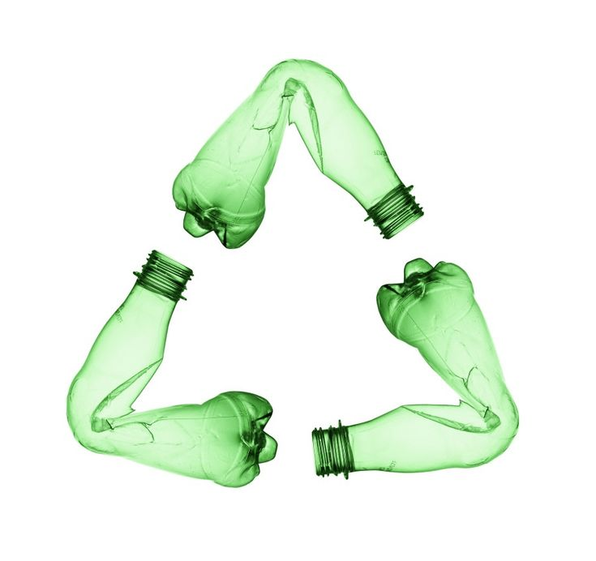
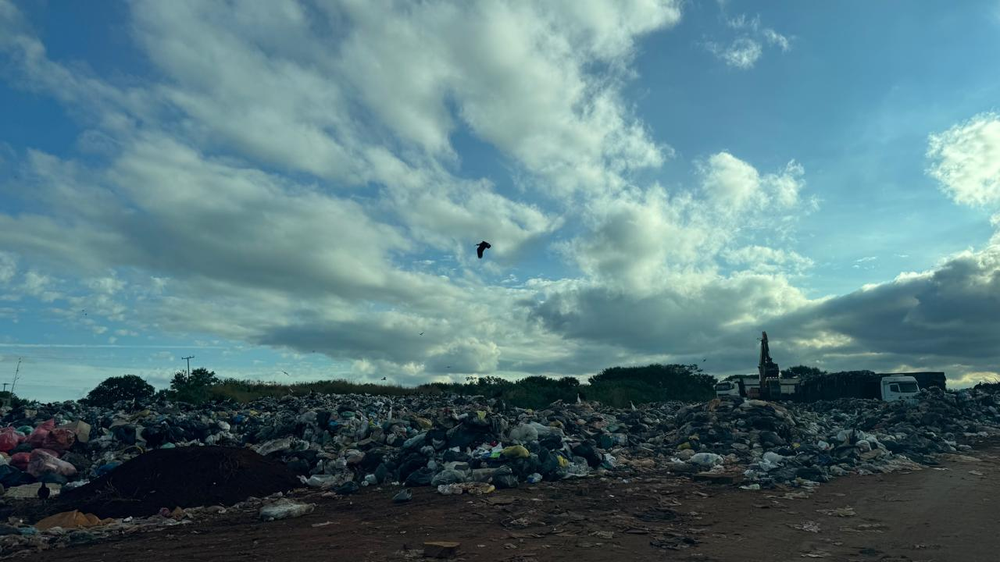
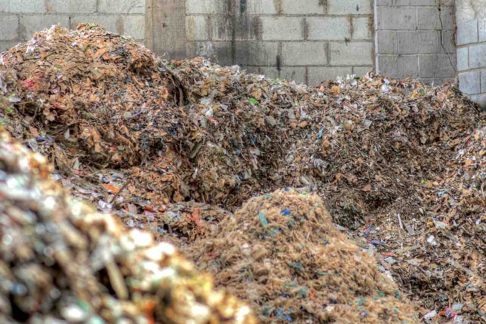
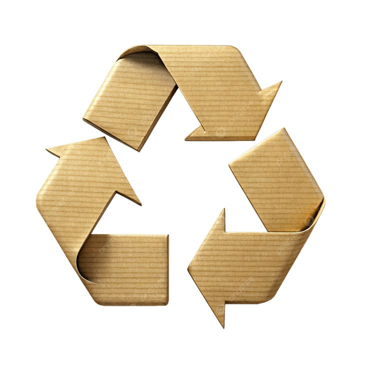
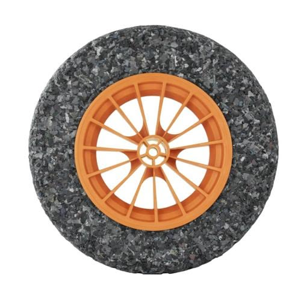
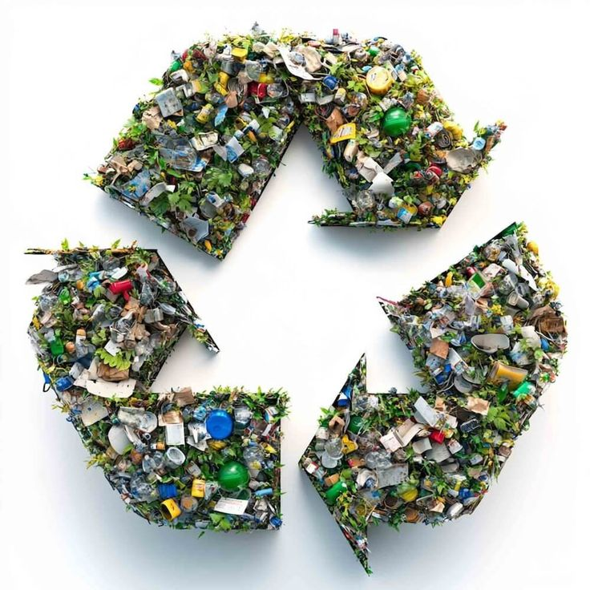
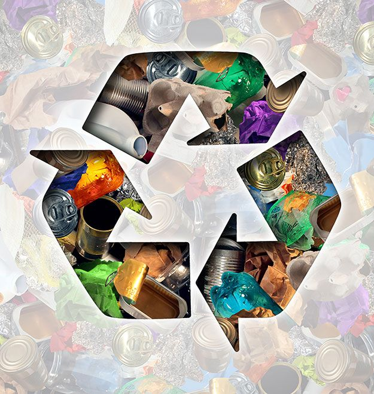

Plástico
Não recicláveis mecanicamente, valorizados energeticamente.

A solução técnica para municípios que precisam de uma alternativa ao aterro, com geração de energia e cumprimento da PNRS.
O país gera cerca de 81,6 milhões de toneladas de lixo por ano (Abrema, 2025), um volume que cresce continuamente.
A PNRS (Lei 12.305/2010) e o Novo Marco do Saneamento fixaram 2 de agosto de 2024 como prazo final para o fim dos lixões. Na prática, cerca de 3.000 lixões ainda operam ilegalmente, despejando contaminantes sem controle.
A gaseificação 4WaTT é o tratamento térmico de alta eficiência que reduz o volume de resíduos em até 90% e estende a vida útil de aterros em décadas.


Não recicláveis mecanicamente, valorizados energeticamente.

Celulose contaminada ou de baixo valor comercial.

Pneus inservíveis e sobras industriais de alto poder calorífico.

Resíduos agrícolas, florestais e podas urbanas trituradas.

Lixo doméstico após triagem de recicláveis.
Gaseificação de leito fixo com fluxo descendente (downdraft): o gás de pirólise é forçado a passar por uma "zona de fogo" estável entre 1.000°C e 1.200°C.
O craqueamento térmico de alcatrões decompõe moléculas complexas em gases leves e limpos, Syngas de alta qualidade para motores de combustão interna e geração de eletricidade com baixa manutenção. Um pré-tratamento gerencia a alta umidade comum no RSU orgânico brasileiro.
Compatível com a Resolução CONAMA 316/2002: tempos de residência dos gases acima de 1 segundo em alta temperatura garantem a destruição completa de compostos orgânicos persistentes, com emissões dentro dos limites legais.

Módulos de 50 a 100 t/dia descentralizam o processamento e reduzem o custo de logística urbana.
A geometria interna minimiza resíduos oleosos e produz gás mais rico em H₂ e CO.
Redução de até 95% do volume do lixo em escória mineral inerte, pronta para pavimentação e construção.
Projeto 100% nacional, manutenção, reposição e adaptação a diferentes resíduos sem dependência externa.
Preparação e triagem dos resíduos para garantir a eficiência do processo.
Entrada no reator a 1.000°C para iniciar a decomposição térmica controlada.
Conversão instantânea da matéria em Syngas, gás de síntese de alto poder energético.
Geração de eletricidade limpa ou combustíveis renováveis a partir do gás produzido.
Rico em CO e H₂, com alto poder calorífico e queima limpa, substitui gás natural, óleo e GLP em setores de difícil eletrificação.
Alimentação direta de caldeiras, com eficiência térmica superior a combustíveis sólidos.
Substitui fósseis em fundição, cerâmicas e química, com controle térmico rigoroso.
Motores de combustão interna ou turbinas a gás para geração firme e despachável.
Base para metanol, amônia e hidrogênio verde via processos de purificação (PSA).
Para a indústria, resíduo é custo logístico e passivo ambiental. Transformamos sobras de processo, embalagens e biomassas em energia térmica ou elétrica para autoconsumo.
Reduz a dependência da rede, zera o envio para aterros e gera créditos de carbono reais para o balanço de sustentabilidade.
O desafio municipal é o volume e a heterogeneidade do RSU. Instalamos módulos próximos aos centros de geração, eliminando transbordos e reduzindo drasticamente o custo de frete.
Transforma o "lixo comum", após triagem, em fonte de receita por venda de energia e economia nas taxas de disposição final.
| Item | Especificação |
|---|---|
| Capacidade por módulo | 50 a 100 t/dia de RSU pré-tratado |
| Capacidade total | Modular e escalável até 500 t/dia |
| Temperatura de processo | 800–1.200°C |
| Eficiência energética | 25–35% (RSU → elétrico) |
| Resíduo final | Escória inerte (8–15% da massa) |
| Emissões | Conforme CONAMA 316/2002 |
A incineração é combustão total com excesso de O₂, gerando calor imediato e grandes volumes de gases de exaustão. A gaseificação ocorre com O₂ controlado e transforma quimicamente a matéria em Syngas, gás mais versátil, queima mais limpa, maior controle de emissões e superior para eletricidade e biocombustíveis.
Sim. A Lei 12.305/2010 estabelece uma hierarquia de prioridades, e a recuperação energética vem após redução e reciclagem. A solução é o complemento ideal da coleta seletiva: gaseifica o "rejeito do rejeito" que não pode ser reciclado e iria obrigatoriamente para aterro.
Diferente da incineração (que gera cinzas voláteis perigosas), a gaseificação 4WaTT produz escória inerte e vítrea. A altíssima temperatura funde e vitrifica o resíduo mineral, tornando-o estável e livre de lixiviação tóxica, pode ser usado como agregado para pavimentação e construção, zerando o envio para aterros.
Não. O processo ocorre em circuito hermeticamente fechado e sob pressão negativa, impedindo a fuga de odores. O craqueamento térmico a 1.200°C destrói as moléculas do mau cheiro. O ruído fica dentro dos limites da legislação sonora.
Sim, a modularidade foi pensada para isso. Enquanto tecnologias estrangeiras exigem escalas gigantescas, os módulos funcionam a partir de 50 t/dia. Municípios menores podem se unir em Consórcios Intermunicipais para viabilizar uma usina regional, reduzindo custos de frete e operação.
Tripé financeiro: (1) taxa de disposição (tipping fee) paga por quem gera o lixo; (2) venda de energia (elétrica ou térmica) gerada pelo Syngas; (3) créditos de carbono pela mitigação da emissão de metano que ocorreria no aterramento.

Prefeituras, consórcios e indústrias: entenda como a gaseificação 4WaTT transforma seu passivo em ativo energético.
Preencha e retornamos em até 24h.